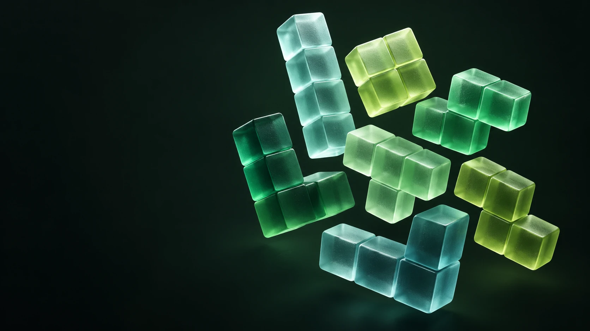

Make every move count.
No automatic falling timer. Move and rotate freely, then drop to commit your turn.

C++ GAME ENGINE · INTERACTIVE CASE STUDY
A two-player twist on a falling-block classic.
Built in C++. Reimagined for your browser.
Biquadris turns falling blocks into a turn-based duel. Clear your board, plan your next piece, and send a little trouble to the other side.
Created for CS 246 at the University of Waterloo, the original project is a C++ game with both text and X11 graphics. Players share a keyboard and take turns moving, rotating, and dropping pieces. There is no ticking clock: the next move is yours.
For me, the challenge was the system behind the game: keeping movement, collision, scoring, difficulty, commands, and two displays working together.
No automatic falling timer. Move and rotate freely, then drop to commit your turn.
Clear two or more rows in one drop to unlock blind, heavy, or force against your opponent.
Five levels change piece generation, add heavier movement, and introduce a center-column obstacle.
No download. No account. Just a good next move.
A browser adaptation of the project rules.
Keyboard, touch controls, and ghost pieces are web additions.
Apply it to the opponent before the next turn.
3right → move the current piece three cells to the right.
Fill a complete horizontal row to clear it. Keep the spawn area open. In a duel, the first board that cannot spawn a piece loses.
Move and rotate without a timer. The top three rows are a spawn buffer. Once you drop a piece, it locks and the next turn begins.
A clear earns (level + rows)². Remove every cell of an old piece to earn (creation level + 1)² more. No clear means no line points.
Clear 2+ rows in a duel to attack. Blind hides the center. Heavy adds descent after horizontal moves. Force replaces their current piece.
Each player loops a fixed sequence of pieces. A calm place to learn movement, rotation, and planning.
A command becomes a move, a move becomes state, and state becomes a display. Each part has a clear job.
Parse commands & repetition
Turn flow & session state
Grid · collisions · score · effects
One interface, two views
Block provides common position and movement behavior. Concrete shapes supply their geometry, and createBlock centralizes construction.
The Level hierarchy encapsulates piece generation. Level 0 uses files; higher levels use weighted randomness and introduce extra constraints.
GameDisplay abstracts rendering. The game explicitly renders through text or graphical implementations, keeping display choices separate from board rules.
The report records an earlier design, including Observer and Decorator structures. The supplied final code uses direct rendering calls and player effect flags instead. This page describes the actual implementation. The web demo is a separate JavaScript adaptation of the course rules, with corrected rotation, scoring, and spawn behavior; it does not execute the C++ binary.
I worked across all of the core modules: the game model, interaction, difficulty, and presentation. The project brought C++ concepts together in a system people could actually play.
Representing the grid, tracking active and next pieces, validating moves and rotations, and implementing line clearing and score calculation.
Connecting players, commands, turns, level selection, and special actions into one coherent gameplay flow.
Implementing sequence-based and weighted piece generation, with level-dependent behavior behind common interfaces.
Supporting command-driven play through text and X11 graphics, while keeping board logic separate from the display interface.